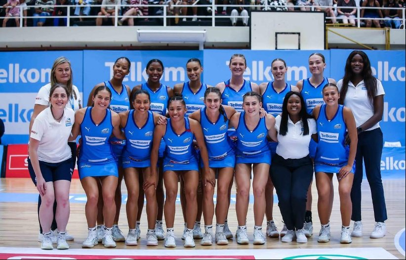
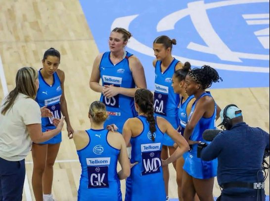
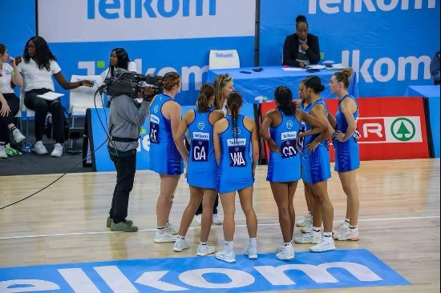

District Sport League (DSL) is proud to celebrate Co-Director Dr Freda Kemp, who was selected as head coach of the Western Cape Southern Stings for the 2026 Telkom Netball League. Under her leadership, the team finished third, earning a place on the podium for the first time in several years.
The campaign ran from April to June 2026, alongside DSL's work in the community. Balancing the demands of a national league season with school visits and community programmes is no small task. It reflects the commitment that sits at the heart of DSL: using netball to open doors for the people who play it, whether they are professional athletes or three-year-olds picking up a ball for the first time.



For more information, contact:
Dr. Freda Kemp, Director
Email: fkemp64@gmail.com
Phone: 082 523 0785